Accepted and closed — 2026-10-31. Reference v3 is approved. Standard rat, no poison/disease: AC 12, HP 7, +4 bite / 1d4+2 piercing, 25 XP, no loot. Quick bite: 450 ms impact, 900 ms clip. All actors still occupy one subcell.
Verification and limitations · Design · Art provenance
Every arena recipe uses seed 8 and the same ordinary level-one party. These are selected behavior reviews, not calibrated difficulty or a balance sweep. Sleep uses a legal preparation swap for an already learned spell. No installed user library/scenario/save was changed.
Screenshots come from strict replay through hidden application-owned windows. Reconstructed captures do not preserve historical hover, floating feedback, or past combat logs. Exact resolved Pack Tactics fields and attack outcomes are retained in each review JSON. No OS input or desktop focus control was used. Interactive motion, selection and fun review remain for the user.
One rat: ordinary bite; victory in round one.
Scenario · Events/checkpoints · Strict trace
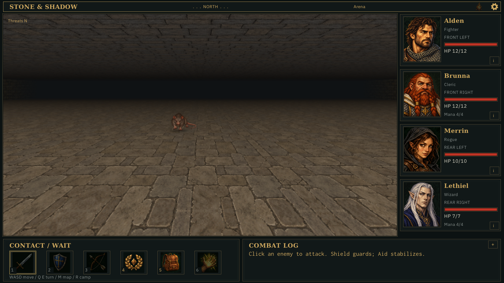
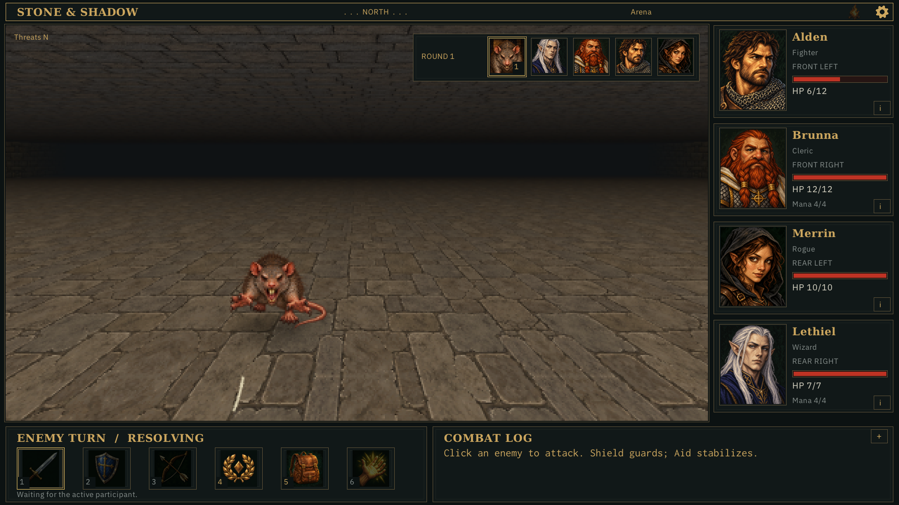
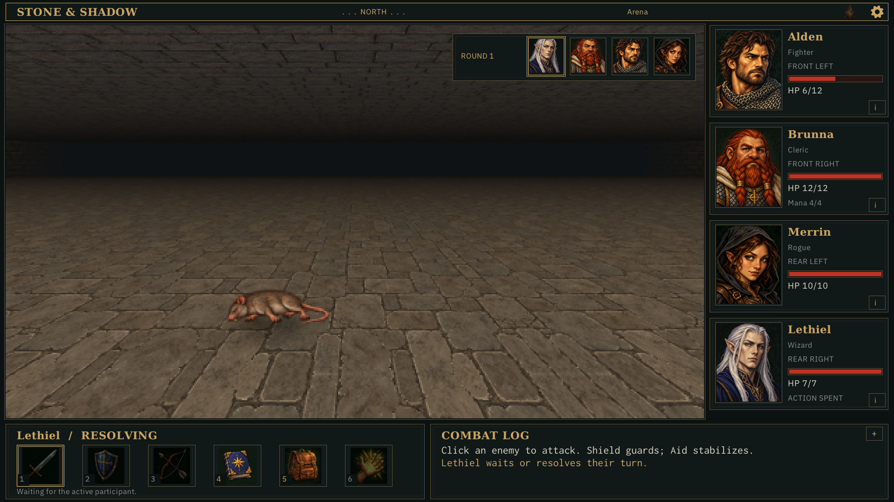
Three rats: four advantaged bites before the party wins in round two. Alden finishes at 1 HP.
Scenario · Events/checkpoints · Strict trace
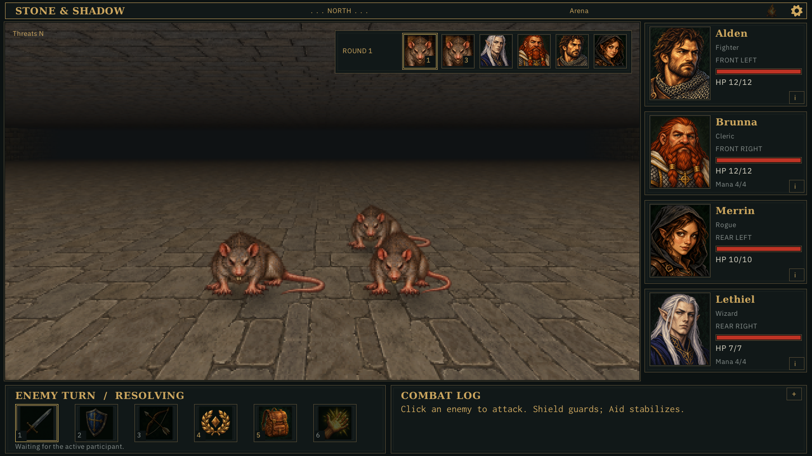
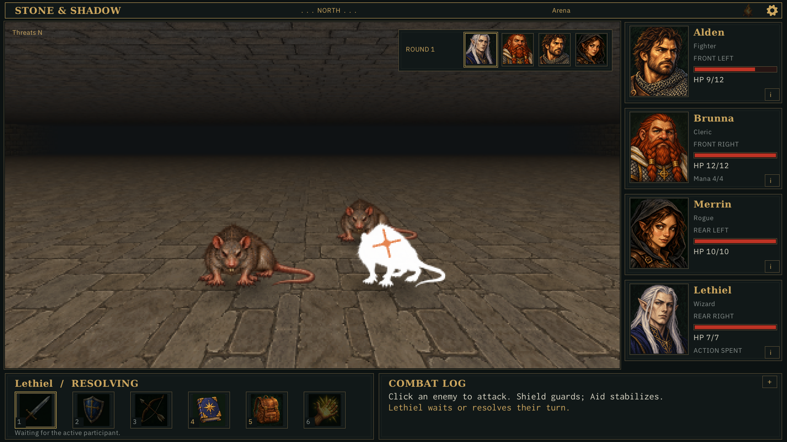
Two rats plus one melee goblin: mixed-species support; victory in round three, Brunna at 0 HP.
Scenario · Events/checkpoints · Strict trace
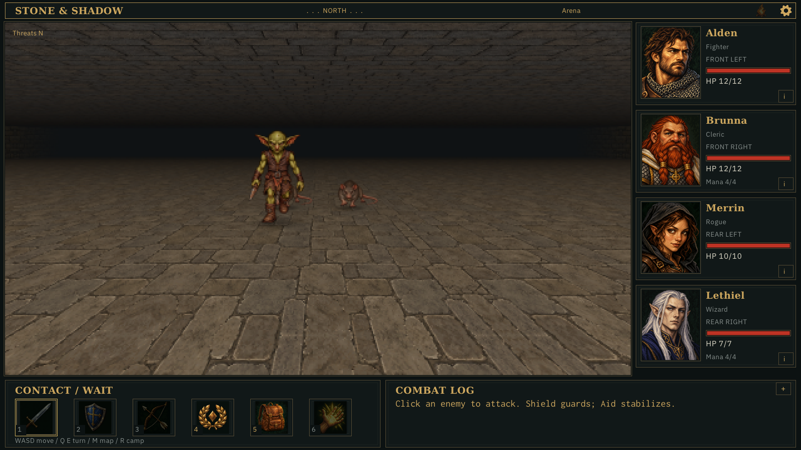
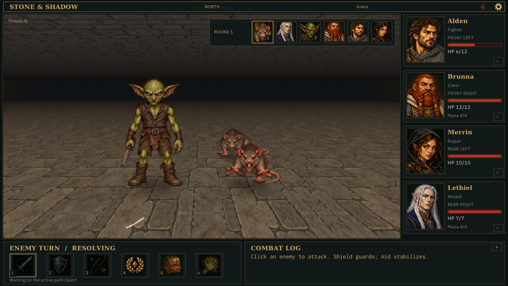
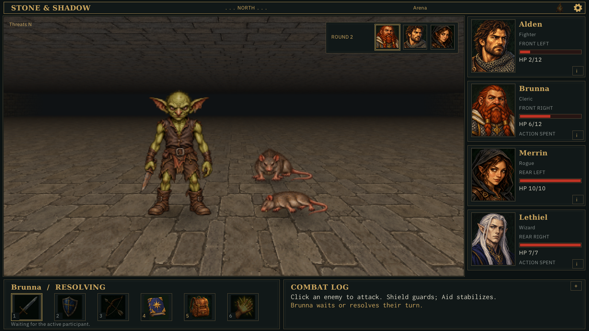
Three rats; after killing two, ordinary End Turn actions allow the survivor one attack. Its next bite is normal: pack_tactics=false.
Scenario · Events/checkpoints · Strict trace
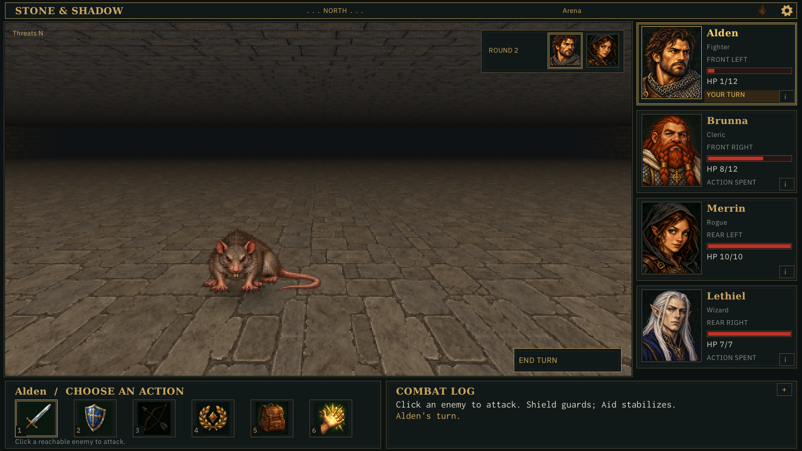
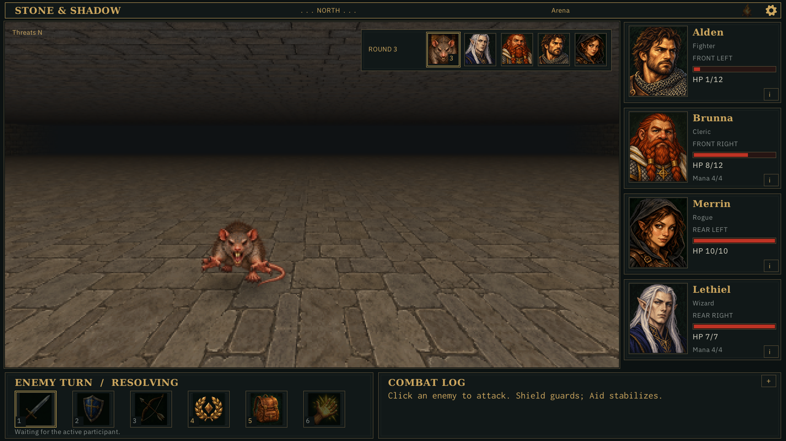
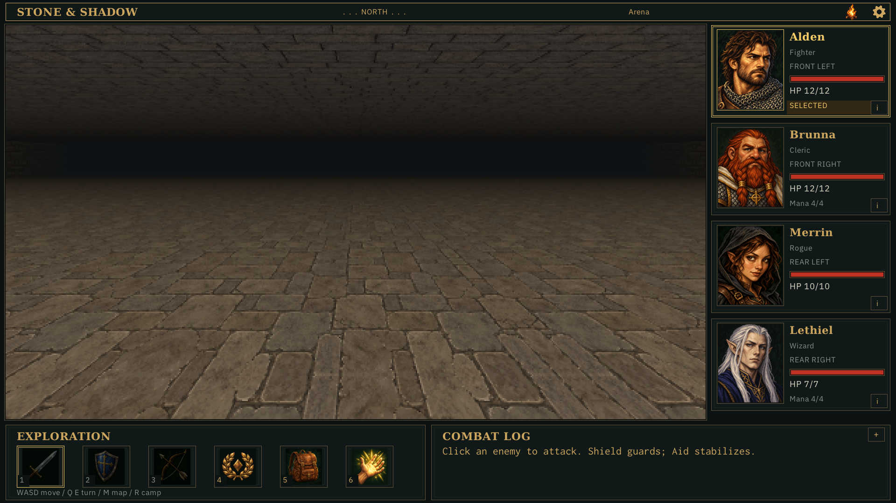
Three rats; Sleep incapacitates two supporters. The awake rat’s next bite has pack_tactics=false and normal roll mode.
Scenario · Events/checkpoints · Strict trace
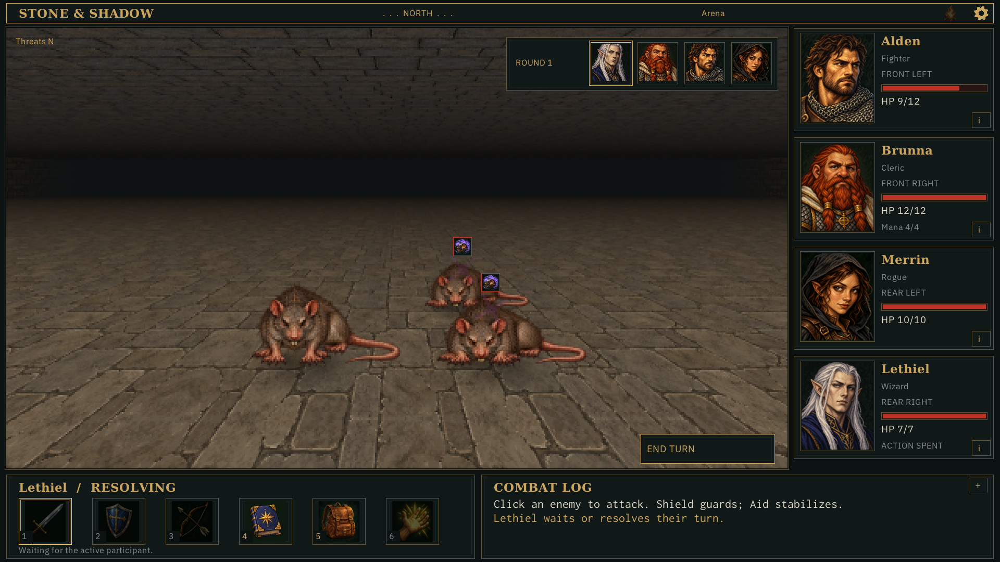
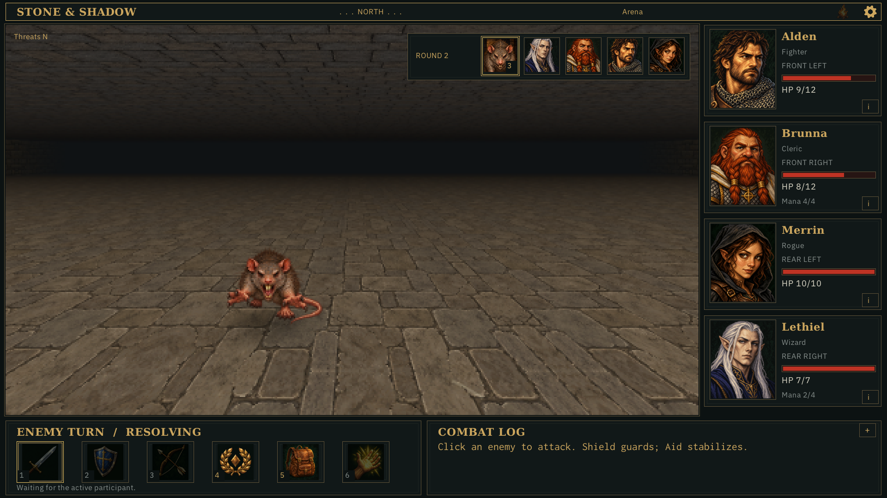
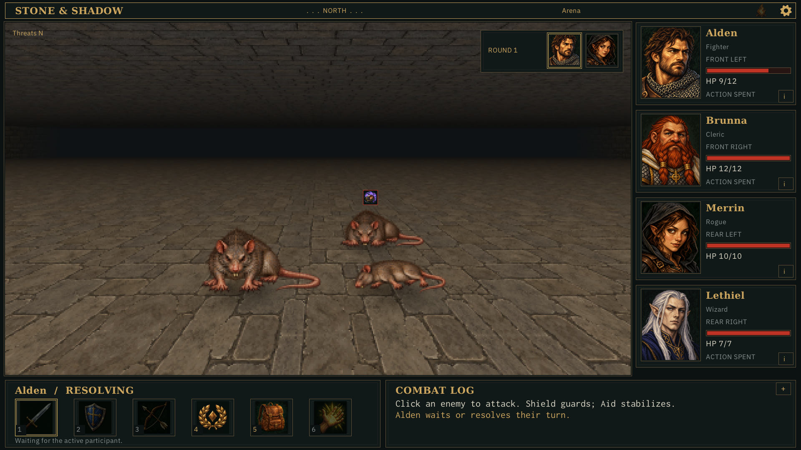
A real weapon hit deals 4 to the rat without killing it; this checkpoint is 20 ms after impact, during its initial hurt flash.
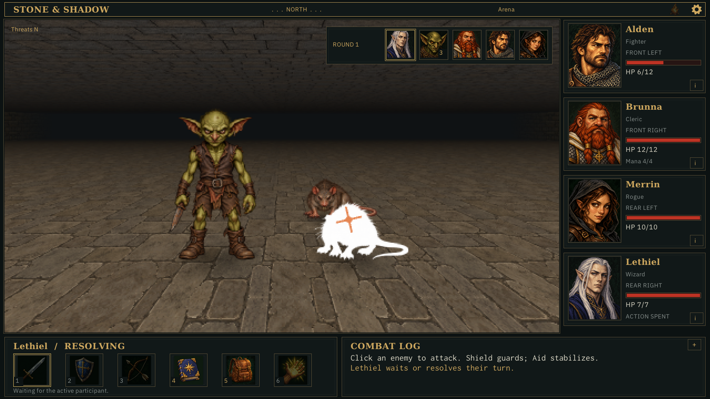
48 poses from 21 selected sheets, composited on gray for alpha inspection. Nine corrections and exact prompts are retained with source artwork. The contact sheet fits each canvas to its tile; dungeon captures show actual world scale.
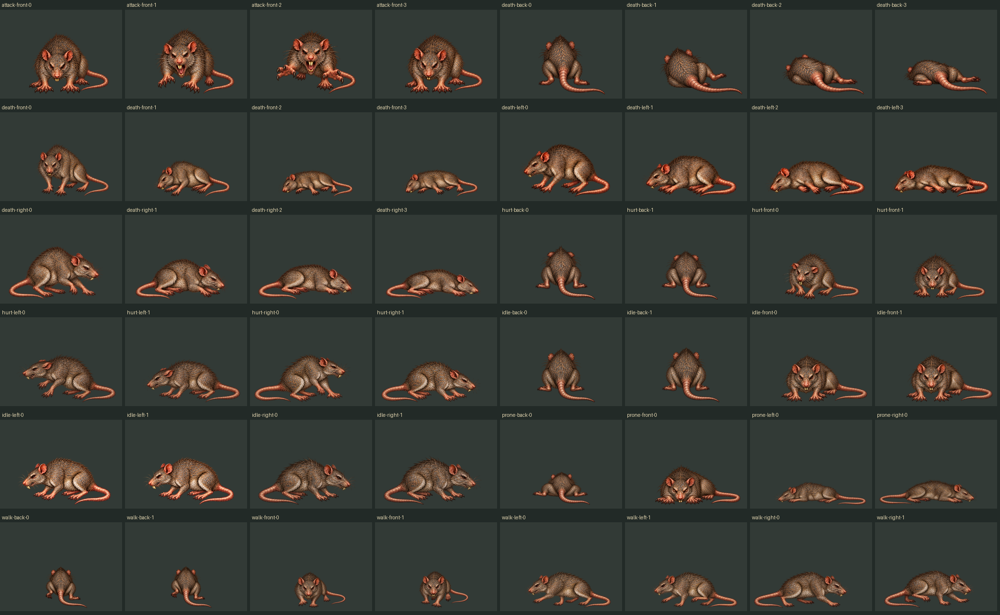